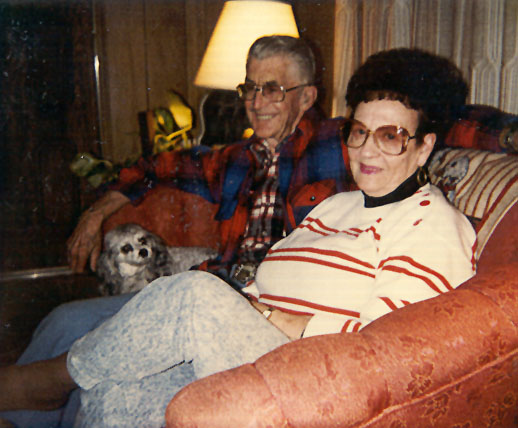

John
and Marge

This a
story of some very special people that has made such impression
on my life that I wish that everyone could have met this loving
and strong couple and could have had as much fun as I did with,
" Mom and Pop "! When I was introduced to these people
I had no idea that such a fantastic, yet inspirational relationship
was to unfold. The two people that I will tell you a little about
were John and Marge Little and were my salvation to the harsh
reality of the life I had led with out guidance that was so badly
needed. Both were rock hounds and were the foundation, I thought,
that all rock hounds were made of and there wasn't any finer.
I was asked one time to go on a rock-hunting trip with a couple
of guys that I had worked with in the construction field and decided
that I needed a break for the work was terrible. I followed these
two into the Owyhee Mountain range in my old GMC to go after thunder
eggs that they had found a couple of weeks before. We hunted all
day and all I had to show for a tank of fuel and a couple of dime
size blisters and a scratch or two were these two thunder eggs
that were about the size of a grapefruit. When I asked if one
of them would cut this egg in half, since I was informed that
you don't brake the darn thing, both said to go to John Little,
that he had the saw and the experience to do such a job. So, I
contacted this gentleman and told him of the task that I was asking
for his help with and he replied, "bring them over anytime
and I'll teach you how to do it"! "Ya, right"!
I've learned to work at cutting glass, working and balancing rifles
and pistols, tying flies for the trout that I love to fish for
and then run a construction business and this person thinks that
I'm going to cut rocks. Well, with that in mind, I now do my own
silver and gold work and cut very expensive opals just for fun
of it now! When I finally met John, I met his wife as well and
there were two to pick from that you could call "Pete and
Repeat" for the match was a good one at best. John was a
thin man of about 5'9" tall and almost white hair and his
wife Marge was about 5' tall and hard working midwestern farm
girl from Nebraska and heavy set. Both with the heart as big as
the state of Idaho and was always ready to share some of that
heart. John did the cabbing and Marge could facet a stone that
you could find anywhere else's if you were to try. They offered
me in that day and were glad to share their knowledge as well
as their hospitality and was a day that will always be remembered.
Because from that day on the three of us were seldom apart.
I was in the hospital this one fall just after meeting John and
Marge with an ailment that was as life threatening as you could
get and I was alone in this isolated sanitary room. I had been
given a sedative to try and get some sleep and was awakened by
this feeling that someone was on the bed that I was occupying.
As I turned to feel what I was experiencing, I felt this hand
rubbing mine and I could hardly open my eyes due to the surgery
and tried to peek though these slits that were once upon a time
my eyes. There was Marge rubbing my hand and I turned upward only
to see this thin little man looking through his glasses filled
with tears and heard him say," son, are you alright"!
To this day, that phrase had never been said to me in the 37 years
of my life and was the beginning of calling them "Mom and
Pop"! Every time they ever introduced me to any of their
friends, neighbors and even relatives, I was always called their
son. Now, a son is to protect his parents and that was put to
the test one year at the annual Nyssa Thunder Egg Days Rock Show
in Nyssa, Oregon.
This one-year at the show we had been separated from each other's
spaces because of one reason or the other and I was in one area
and the folks were in another area. I had been at my booth for
over five hours when a friend came by and I was able to relay
to him that I needed to take a walk and take breather from the
"look-e-lews" and the people who could always find it
"cheaper"! He agreed and off I went to find the folks
and see how they were doing in sales and such. As I walked down
the isle I noticed that there was this guy about the same height
as John at the booth and I thought that I would just stop shy
of their booth at the neighbors and past the time till this fellow
had finished. If I were to know at that time what this character
was going to do I would have crashed the party sooner and stopped
what was about to happen. It came as a shock to me when this so-called
human being began calling Pop a liar and using words that you
would expect from some drunk from the local bar. I was appalled
at first, and then became angry as in the fact that I could see
this mans bones breaking in my mind. Without making a sound as
my for-fathers did when they ruled the land, I was able to slide
up behind this imperfection of a man without him knowing I was
even there. I was so close to this man I could count the sweat
beads on his neck and watch the sun dance the sparkle of moisture
on each strand of his hair. He is about to understand that he
is going to get a first hand glimpse of the action that happened
at the " Battle of The Little Bighorn"! As I was about
to take action, I had noticed that John hadn't taken his eyes
off this guy and Mom was looking right at me with the best poker
face that had ever been given. Now, I forgot to tell you that
I was at least 130 pounds heavier than this character an about
a foot taller, get the picture! When Mom very slowly turned from
her side with Pop and started to walk around the tables and proceeded
to come towards this guy. He still didn't know I was there till
Mom came up and slid her arm around my huge right arm and hand
as to stop what she knew could be this idiot's last stand. Its
then he turned and cocked his head upward to see that he was looking
into the eyes of a half breed Indian called, " War"!
The first thing Marge said was, " son, he's not worth killing
and I don't want to have to clean up the mess"! This guy
was so scared that he released in his trousers and we all had
a good view of wetness as he left running. The neighbors all knew
the relationship between us and knew that I would defend John
and Marge to the death. They were about to do something on their
own till they saw me arrive on the scene and decided to stand
down and watch the upcoming attraction. It was then this lady
who had heard the conversation asked John," Would he have
hurt that man"! Pop said," maim I couldn't stop him
with a 357 magnum, but his mother can stop him in his tracks".
But let her say "sickem", ---- lady have you ever seen
a 6'3", 255 pound pussy cat with 10 inch teeth, her reply
was "no" and John said," I haven't either and don't
want to"! The rest of the local dealers that witnessed the
show were all laughing and some were laughing so hard at what
they had just seen that they were crying and holding their sides.
All agreed that it was one of the better floorshows that they
had seen in years at the show and was always ready to tell anyone
of the event that made the day. From then on they knew that they
were protected from all they could imagine and the love for them
was always there.
After the better part of fifteen years in their lives, it was
in the spring of 1996 that after a long illness and battle that
Marge decided to be in the arms of our Lord and left John and
I. It hit John very hard after some 38 years of marriage to this
wonderful woman. John spent the summer that year traveling to
see friends and relatives that he had not seen for years. It was
my pleasure to take him to the shows that we all had attended
for so very long and so many years and was able to bring a smile
to his face when he needed it. But, he was lonely without his
" Marge" and it was December that same year that mom
called him home to be with her. I was able to be with both of
them in their last few moments of life on this glorious globe
that we call," Earth". There are people in this world
that we will always hold very dear in our hearts and become the
rocks of our foundations as humans. But, somewhere in our vast
comprehension of life there will be certain people that will stand
out more than others and will be our inspiration and teachers
of the understanding that is needed to survive in this world.
I have many fawn memories of these two people and the love that
they shared with so many of us as friends, and yes, even their
kids. They were always someone that you could go to and pour your
heart out to and they never judged you for your faults or your
shortcomings. They never had a harsh word towards anyone and wouldn't
tell you if they did, because it wasn't their way of life. I can
remember when I could have done something wrong and John would
sit me down and give his version of the "fatherly advise"
and then Marge would take me off to the side and give me the motherly
"what for and the why not" which seemed to go hand in
hand with what John had to say. But, as we all know that mother
could always smooth out the wrinkles when we were kids growing
up. Mom had two favorite sayings that echo in the back of my mind
from time to time that always makes the hair on the back of my
neck stand up when I hear it. She would say," why not"
or "it ain't worth it"! John's was, "sometimes
the least said, the better"! All three still have a sort
of grip on me and the memories of them and of their conversations
that were educational. The joy of having known them, I wish I
could share with all of you and have the time to write the short
stories that comes to mind that involves our travels around the
Pacific Northwest but the computer isn't big enough. So I'll have
to settle with this story and hope that it has touched you as
it has several of their kids and friends that knew them. I hope
that you, the person reading this short story, finds someone that
will inspire you as much as these two people did for me and saved
my life along with many others. They were saints and didn't know
it.
Thanks for reading!
GOD
AND MOM
GEORGE
AND ANITA VON BRANDT
This is yet
another story about a couple that put a lot of effort into this
persons life to see if I could succeed at keeping my nose clean
and out of trouble. I first met them at the Caldwell Rock and
Gem Show in Caldwell, Idaho on a hot May afternoon about two days
before the show was to set up. John and Marge Little introduced
me to this character that was boastful, short, dark facial features,
no neck, round as barrel and the voice that had this tone that
when you heard it, you listened! He was about 5'4" tall and
about 245 and had arms the size of my legs, wore glasses and the
eyes were eyes that could look clean through a person and chill
ya clean through to the bone! He sounded rough and tough an attitude
that seemed to say," don't tread on me"! John walked
up to this man with me tagging along as if I was a lost sheep
and spoke to him and asked that he would like to introduce him
to the kid that they, John and Marge, had been telling him about.
Well, without any hesitation this man reached out to shake my
hand as if it would be a cordial way of accepting the fact that
I was John's friend and let me tell you that was my first mistake.
This man had a grip that was like putting your hand into a vise,
the pain of it all and I thought that I was strong after 20 years
of construction work. That handshake almost brought me to my knees
in a heartbeat, but I wasn't going to lead on to either of them
that it was to say, "Painful"!
His wife on the other hand, was a caring looking lady
and had the look of a lot of hard years to her face, but kind
just the same and was sort of a laughing, jolly type person. She
was about 10 inches taller than her husband and at first I thought,"Mut
and Jeff". She looked like she had all the business smarts
between them and had the talent of running any major corporation
along with being the C.E.O., rather than a Rockshop in downtown
Oregon City, Oregon, a part of Portland. She introduced herself
with a kind of giggle voice and told me that her name was Anita,
the better half of the two and immediately George perked up and
said," in your dreams sweetheart"! I won't stand for
this "bull-it "to come in second best on this deal,,,,
but if you say that I am,,,, then your right dear! Now you want
to talk about someone giving you the impression of mixed messages,
it did then! But, after a few times being around George and Anita
Von Brandt it became obvious that they too, were going to be friends
for life. It wasn't till a couple of years later that I was in
their shop and was looking over his (Dad) shoulder as he was doing
some gold work that he backed up from the bench and asked,"
what do ya think son"? After all this time of being around
them and their jokes and antics I answered back real quick and
said to him, "looks pretty good dad"! I thought that
he was pulling his normal joking attitude again when he asked
me that question but he wasn't. He was serious and meant what
he had said and it was then that I found out why he had chosen
to say this to me in the manner that he did. I've never regretted
that conversation with him on his life and what he had been through
all the years before I had met him. In honor of what he told me
it will always stick with this person and never be revealed to
anyone ever again. It was like having a conversation with God
himself and I treated it as if I was talking with God, knowing
full well that he was only mortal and not our spiritual leader.
It was then I remembered a long time ago that a friend of mine
called his dad," God", which stood for, "good old
dad"! It stuck with George and seemed to fit in my eyes that
he should be called this in admiration of his position towards
me and its been our greeting ever since. It has been more prevalent
since the passing of John and Marge Little. George and Anita have
never got over their passing and I never will!
It was at the Caldwell Rock show that I saw how
this short, fat, no neck German could take care of himself and
what he had on the tables. This young kid was trying his best
to be secretive in what he was doing, which was being up to no
good. He was trying to case George's tables as to see what he
could steal and get away with, without being caught of course.
I noticed the kid doing his little dance and worrying about being
discovered, when I noticed that George was onto him. George turned
his back for a second and sure enough, into the pocket went this
ring that was about $300.00 as George turned back around. George
in his rough, big and bad voice asked the kid, "How bad do
you want that ring young man"! The little shaver wasn't but
about twelve years old and he looked at George and said,"
I don't have any ring"! George looked over the counter that
was about four feet wide and said to the kid, "put it back
and you won't get hurt"! Well the kid turned and began to
run and what I saw next was nothing short of an Olympic record
dash over this glass case and the table by this walking brick
of a man and before this kid got twenty feet from the counter,
George had him. George had caught the kid by the belt and loops
of his Levis's and proceeded to hoist this kid above Georges own
mid section with just one hand. Now this kid was about a hundred
pounds and by this time was kicking and yelling to let him go
which caught the attention of security. Several of us that were
there putting up tables for own wares were also on the move to
see what was going on and was at the scene when the security got
there. This kid was screaming at the top of his lungs to make
George let him go and that wasn't going to happen because George
had a hold of him like a bear holding a jar of honey for ransom.
I didn't say anything because of the security, that I saw the
kid do what he had done and knew which pocket that the ring was
in. George then with the other hand grabbed the kid by the ankle
and hoisted him now upside down with his head just an inch or
two off the concrete floor and proceeded to search the pockets.
Sure enough, there was the ring and George had it in his hand
when he released the kid's ankle from his death grip and the kid
hit the floor, rolled over and ran out of the building never to
be seen again. I would venture to say the kid either was taught
a lesson or is in prison by now from doing some other criminal
act.
There came another time when I was at the shop in Oregon
City that I wouldn't have believed if I hadn't been there. This
lady came in and was somewhat upset to begin with and asked for
the piece of jewelry that she previously asked George to repair
for her. George, as always, asked her for her repair ticket of
which she had in her hand and gave it to George and he started
looking for the envelope that contained her jewelry. He then turned
to her and proceeded to explain to her what had to be done and
that the cost was, I think, about $200.00 and was a little over
what he had quoted her before doing the work. Well, what came
next wasn't pretty and she was going to make an example of the
issue. Now, I ask you, have you ever seen the film showing the
atomic bomb blast going off in the desert and all the buildings
being blown away and destroyed? Well, that's what this lady looked
like as she tore into George and that brought Anita on the dead
run from the back of the shop. This woman started in saying that
he was crooked, no good, a thief, trying to take advantage of
her, over charging and trying to steal her money. George was staying
as calm as I have ever seen him and I knew that he was about to
blow and if he did, I didn't want to be around! So, this lady
starting hauling out her checkbook and a fist full of money, that
would have choked a horse and all this time still going at George
for what he was charging her. While she was still chewing, she
handed him over a thousand dollars in cash and was writing a check
for the repair. George turned to me an flashed this money at me
as to tell me how much was there and then this gal handed him
the check and was starting to leave, still cussing him out. I
mean by now this woman was using language that you'd here on the
ranch and would make a sheepherder blush! When in mid stride he
stopped her and point blank asked this woman," are you through
running off your mouth"? With that one statement, this woman
looked like she had been hit with a baseball bat right between
her eyes. She stopped yelling and asked the dumb question, "Why"?
George looked at her and very politely asked," if I'm a thief,
just how much godd-n money did you give me"! She looked at
him and yelled," you know damn good an well how much I gave
you S.O.B. "! "I wrote you a check for the damn bill
and I hope you choke on it," she replied. George started
into his yelling voice that if the door was open you could of
heard him down to city hall on Main Street. "If I'm a thief
and a no good S.O.B. why then did you write a check for the amount
and leave this thousand dollars in cash in my hand"! "A
tip", he exclaimed! This lady looked at him with this beet
red face and then noticed the cash. She then also noticed that
George was still holding her handbag in the other hand. Well needless
to say she had at that moment realized she had made a grave mistake
in trying to tackle the most honest person in Portland. This lady
finally realized that if she was a good hunting dog, taught to
hunt squirrels mind you, that she had just treed a cat,"
polecat" that is! Well we all had a good laugh and have been
the best of friends ever since and she takes her jewelry to no
one else but," George". Now days she just drops off
the items that she needs repaired and there has never been a question
since about the charge as she gladly shells out the money for
payment.
Then there was the day that I was in the shop discussing
business with "God" about our opal claims in Nevada
when the buzzer went off from the front door. I happened to look
up and my jaw hit the floor. Here were two huge black men trying
to get through the door at the same time with this woman behind
them beating them on the back yelling, "get out of my way"!
Now what I saw next wasn't what I had expected, to say the least
as this woman flipped back the hood on her parka and there stood
Whoopy Goldberg. Now, I was a Star Trek fan and didn't want to
miss any of the episodes that came on at home or in Portland and
here stood the best actor of the show in the shop. You could have
slapped me in the face and I would have never felt it, I was star
struck to say the least. Dad was the first on the scene and welcomed
her to his shop. She told him that she was making a film just
around the corner on the river docks and that because of the rain
that they called it a day early. That she wanted to observe the
sights in Oregon City! As she was walking from across the street
she said that something was calling her from across the street
and she had to investigate what was calling her. I had several
thoughts about this and none were what I called being smart, but
stayed still and didn't say a word as I kept those thoughts to
myself. Mom was standing next to me so I had better not said what
I thought or I would have had some sore toes. Anyway, Whoopy asked
what was behind the cabinet door that dad was standing next to?
As she said that the felling she was getting was coming from behind
that door.
Now I knew what was behind that door as I had seen
it many times in the past. Dad many years ago at a show in California
bought this plate of Smokey Quartz with this one crystal that
was about 12 to 14 inches long that stood off at an angle at about
30 degrees and he had a name for this impressive piece that we
will leave a secret. It had to do with a certain part of a male
donkey, need I say anymore!
Anyway, back to the story
She again asked to see what was behind the door and this time
with a discussion on what had called her into the shop from across
the street in the first place. Dad again stated that what was
behind that door wasn't her concern and wasn't for sale anyway.
Now can you imagine this jolly type person that we all see on
TV and has a lot of sayings and jokes at everyone being upset.
Well, let me tell you, this person became ruffled and began to
go head to head with dad and these bodyguards were getting a little
"Yancey to boot" and I could see the outcome real quick.
I wanted to stop dad and tell him that these two monsters could
make us both look like chopped liver and I didn't like mustard
that well. Well, after a little more cussing and discussing he
finally agreed to open the door and show her the piece that was
causing the entire ruckus. Then in a very stern voice she asked,
"how much"! Dad about blew his stack and began telling
her that just because she's a movie star that wasn't going to
get her anywhere in his shop and that if she didn't like it she
could leave. Now I can imagine the look that was on my face when
he said that and I don't think it was the look of shock, but the
look of disbelief at what I had just heard. Whoopy, then piped
off and said, "I'll give you $5000.00 for it and not a penny
more"! Dad said, "how much"! Again her reply was,
"$5000.00"! Dad was then faster than greased lightning
and said, "Sold"! After that she excused the bodyguards
and told them to go back to the set and if they wanted her that
she would be here at the shop and they could reach her here. That
was the day of all days for we had lunch together and with the
flip of a coin she won and sprang for the burgers that afternoon.
The rest of the afternoon you would had to have been there to
seen for yourself what fun we had, all three of us, crawling around
on the floor on hands and knees looking at all the rock in the
shop that dad called his "goodies"! We even got a Christmas
card from her that Christmas and I have mine in the scrapbook
and will always remember the day that Whoopy came to the shop.
Oh, by the way! Dad told me that he bought that piece from
a dealer that was going out of business and that he paid $100.00
for it. I asked him if he could sleep at night for that dastardly
deed and the torment that we, mom and I, went through that day.
His reply was, "what do you think"! I didn't have to
think, I knew. She came back to the shop on several occasions
and once again when I was there and as always it was if she had
just came in contact with the long lost brother that she hadn't
seen in years. She's got a hug that will take your breath away
as she is strong! But a sweet person never the less! What she
had to say about the government, welfare and the up bringing of
kids today, well lets just say she would make a great rock hound
and leave it at that..
It has been along time since the days of old that
we met. There has been several times to reveal towards the affectionate
moments that I have had many a laugh at the life and times of
these two. They have been the best of friends to the point of
them wanting to meet every girlfriend that I dated for several
years when I was single. There was one time I was telling them
of this gal that I met and that they should meet her as I thought
she was the living end. Dad piped off and said," bring her
to Portland so we can"! So, I did! Dad and Mom took us
out to dinner the day we arrived and they were so happy to meet
this girl and wanted to know a little bit about her and what she
did and etc. Well, all of sudden this gal became related to a
clam. She had no answers to any questions, was terribly uncomfortable
and was becoming shy and inverted to the point of becoming almost
to tears. Dad turned to her and said," I for one would like
to know something about you and if you're going to marry each
other"! Wrong question to be asking this gal that I had
only dated about two months and the "M" word was not
in her vocabulary as yet. Needless to say when we got back to
Idaho, I never saw that gal again. "Thanks Dad"!
It was about 9 years ago that I met my wife and that very same
year as always, dad said," bring her to Portland". So
I figured out a way to get this gal to come with me to Portland
as I did have some business to attend to with him anyway. Again,
they found the time to take us to dinner and dad proceeded to
ask the same old questions and mom just sat there taking in all
the conversation and the facial expressions as well. Then after
about two hours hammering away at this girl he stooped and asked
her if she was planning on marring this so-called idiot that they
called their son. She stopped after being brutally interrogated
by this man and said to him, " when I think it's your business
I'll make sure that you're informed"! It was with that answer
that I thought the party was over and time to get out the boxing
gloves for these two and get ready to start selling tickets for
the fight. It was the biggest shock to me when he ruffled up like
an old ruffled grouse and looked over the top of his gold rim
glasses and looked her straight in the eyes and said," informed
you say"! " I don't want to be informed, I want to be
there"! This was a reply that I didn't expect and had no
idea that she had even thought about it. But thanks to dad, we
did get married at the Lakeview Show on August 13, 1999 and dad
was there and mom cried as well.
There has been many a business deal that dad and I
have done together and a lot of things that he has taught me as
well as mom doing her share. These things I think made a better
person out me than it should have and I owe a lot to them for
what they taught me. Its been right at 20 years since that fateful
day in May when I met these two and we haven't been to far apart
from one another since. Dad is getting along in years but refuses
to give in to age and moms still there keeping him in line as
he puts it! They have had their health problems along with their
surgeries and have scared the hell out of me a couple of times.
But, they keep on stroking and try and not skip a beat as they
still have their business that they've had for so long and their
rock shop as well.
Again, it is so funny how certain people can influence
others on this journey of life that we all travel while we live
on this earth. Its people that have a heart that is willing to
share their views and to lead others down the path of right. I
hope that some of you that read these "half baked" stories
that I write find what I have found in others and can enjoy life's
unfolding mysteries as I have found. As they say about not judging
a book by its cover holds true in people and you should always
allow yourself to the time to open the cover. You sometimes are
surprised at the story and of course the plot that can be the
determining factor to want to read on. There are always people
that are like a sad dish of chow and then are some that seconds
are not enough to satisfy your appetite and can't wait till you're
able to sit down at the table again. I don't think that I'll ever
get tired of being able to learn from dad and mom and their encouragements
about the business of jewelry making or life itself. As for my
wife Cherie! She has become the favorite of those two and they
can't wait to hear from her or see her as she has them at the
top of her list as well. I hope that this story has touched a
nerve in you as well to look at people a little differently than
you have before. You never know when you'll meet the diamond in
the rough till you look……. Thanks , Dad and Mom!!!
Home|
Jasper | Agates
| Opal | Facet Materials | Finished
Gems | Finished Jewelry
Collectables & Collections
| Specials | Equipment
| People Stories
Ordering Info | E-mail
Us